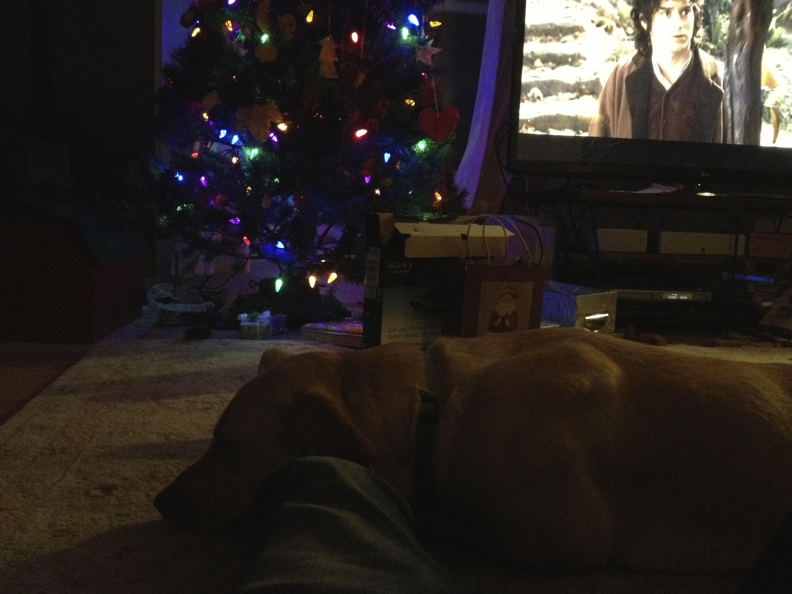
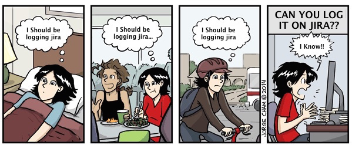

ETHAN WANG

This cow get stuck in a chair


New UNORGANIZED STUFF
Apache Con 2014. http://apachecon.com http://events.linuxfoundation.org/events/apachecon-north-america/program/schedule Email me if you want a copy of my calendar.Friends Link, check them out!
Paul Barham. Cool Software Architect
https://github.com/zmon
Oleh Kovalchuke. Great designer
http://olehko.altervista.org
VSRE
What is this?
VSRE stands for "very short reply expected".
It's a way for you to indicate to the recipients of your email that they have to reply with a short (usually one to five words) reply.
Typical replies to VSRE are "Yes", "No", or "Tuesday", or “Pls send more info".
It is not a standard, just a human convention, like FYI, or RSVP.
Why?
We all get a ton of email. In most cases replying politely can be demanding.
But it shouldn't be.
When someone sends you an email with "VSRE" in the subject or the body, he/she is expecting a very short answer.
"Expected" or just "Welcome"?
This was one of the points debated on the original discussion on HN: is the recipient of an email tagged VSRE free to choose between a very short or an extended reply?
The answer is that the recipient is expected to give a short reply.
The reason behind this is that if VSRE indicated that it's up to the recipient to decide, the recipient would be left with two options:
- a long, polite, answer that fits our existing way of communicating.
- a very short, impolite for some, answer
VSRE wants to remove the overhead of going through such a decision process. So, you are expected to give a very short reply.
Do you want to give a lengthy reply? Go ahead and take the risk, we are humans we don't communicate using well defined protocols. But keep in mind that the sender didn't ask for a lengthy reply.
Use it in the email subject.
The email subject is the best place to put VSRE, it will probably help the recipient know in advance that this is an email that can be quickly answered.
Add it to your email signature
A great way to spread VSRE, and indicate to the people you exchange emails with that you would be happy to get VSRE-tagged emails is to add the following lines to your email signature.
=========================================================== lcome VSRE emails. Learn more at http://vsre.info/ =======================================================
What if the recipient doesn't know what VSRE stands for?
See above, "add it to your email signature". :-)
History.
The idea was initially described in blog.vrypan.net, and triggered a lengthy discussion on news.ycombinator.com and a good number of mentions on twitter, facebook and google+. About a day later, this page was set up.
Other people said...
VSRE saved my life, how can I thank you?
Just link to this page. Help spread the word and make everyone's life easier :-)
CREDITS of VSRE@ethanwang.me GLHF
Follow @aertoria